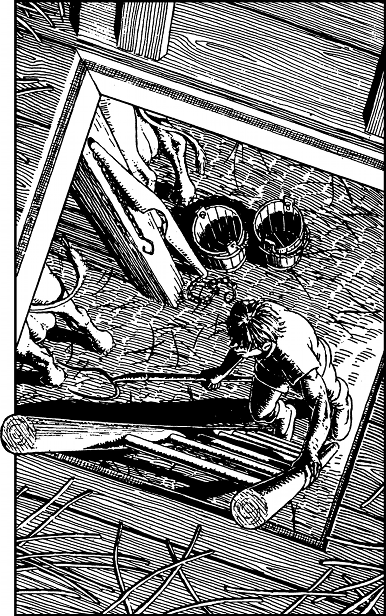

326
You leave the ridge and trek across a ploughed field to get to a large barn, the closest of three outbuildings surrounding the remote farmhouse. You enter this barn through a rear door and discover that it shelters twelve milk cows, housed in stalls, and a few dozen chickens which are penned into a corner. You climb a ladder to a hay-loft where you discover a small store of milk, cheese, and eggs (enough for 2 Meals). You feel tired after your earlier ordeal in the Grochod Forest, and so you make a comfortable nest in the hay and settle yourself down for some much needed sleep.
You are awoken shortly before dawn by the sound of whistling. It is the farmer’s eldest son and he has risen early to milk the cows. Carefully you crawl to the ladder and look down to see the young man standing directly below. He is holding a pitchfork in his right hand and he is about to climb up the ladder. You pull away to avoid being seen and hurriedly you look around for another way out. The only other exit is a small loading door through which bales of hay are hoisted by line and pulley into the loft.

If you wish to leave the barn by way of the loading door, turn to 133.
If you decide to hide in the hay and wait for the farmer’s son to go, turn to 181.